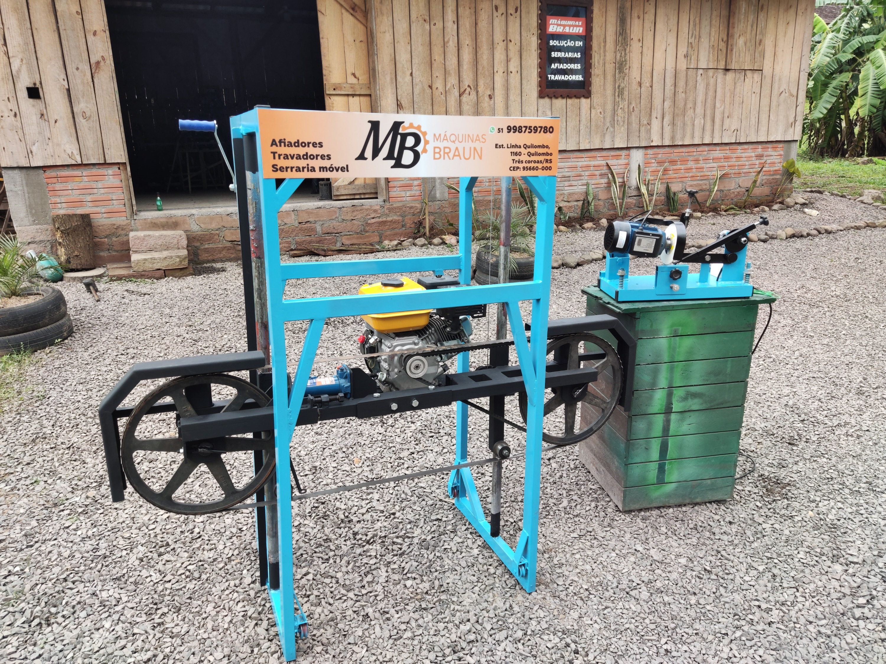
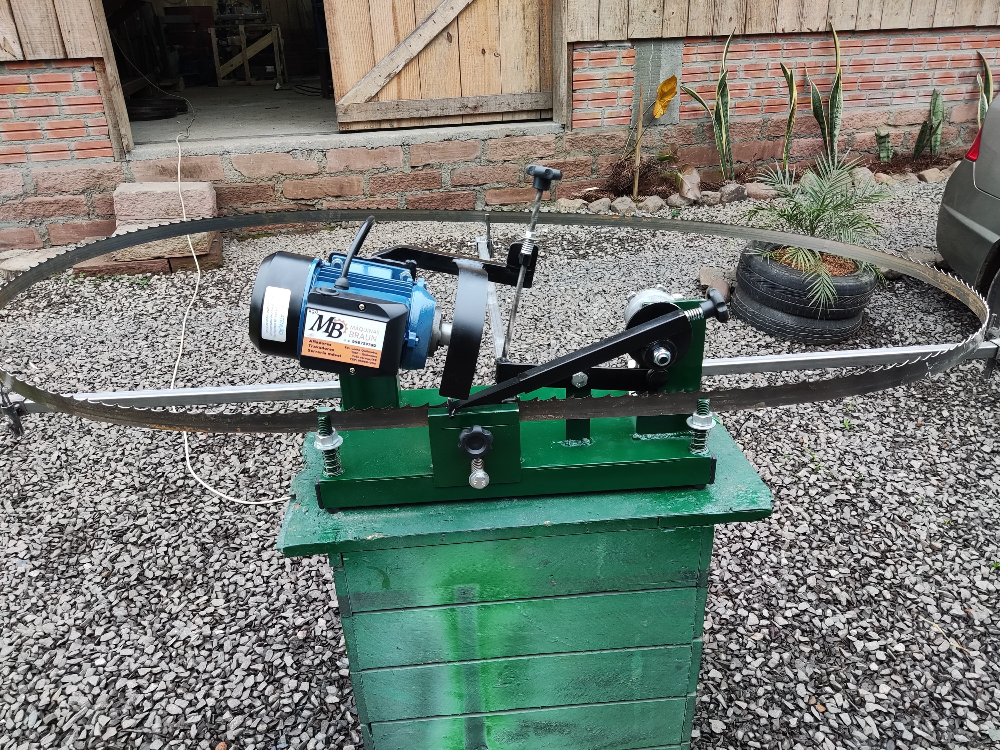

Nossos Produtos

Serraria móvel
Nossas máquinas de corte, são produzidas nos tamanhos de corte de 60 cm, 80cm e 1 metro. Também desenvolvemos projetos personalizados para nossos clientes, assim permitindo que tenham máquinas de acordo com as suas necessidades e configurações, seja ela para uso industrial ou uso pessoal.

Afiadores
Os afiadores automáticos permitem uma maior precisão na afinação de seus equipamentos, melhorando assim sua qualidade e rendimento. Produzimos afiadores automáticos para serraria móvel, serraria industrial, mercearia e açougue.

Travadores
Fabricamos trovadores para fitas de 1.¼ até 2 polegadas do passo de 19 a 22 mm.